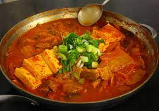

Miso Soup Recipe

Ingredients
- Tofu
- Well-fermented Kimchi
- Anchovies
- Daikon Radish
- Green Onion
- Sesame Seeds
- Bring water to a rolling boil
- Add Anchovies, daikon radish, kimchi and green onions
- Keep at a boil for at least 20 minutes
- Add tofu and boil for 5 minutes
- Top with green onions and sesame seeds and serve!